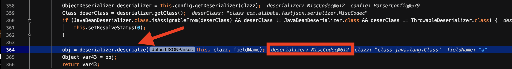
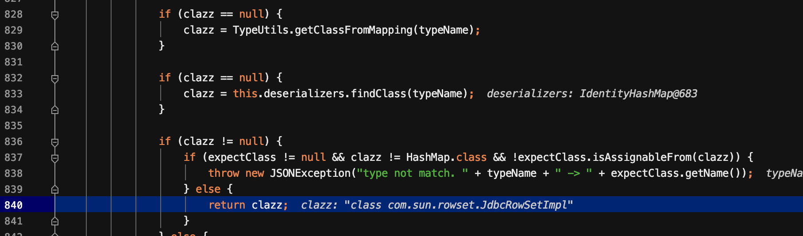

1.2.46版本中将org.apache.ibatis.datasource.jndi.JndiDataSourceFactory添加进黑名单，使得利用失败。此时出现了不开启autotype的情况下成功的绕过checkAutoType，且通杀1.2.47以前的所有版本。
整个复现系列的payload放在了github上。
漏洞信息
影响版本
- fastjson <= 1.2.47
漏洞分析
该漏洞是通过绕过了checkAutoType的检查，从而成功利用。这个时候先来看看之前提到过的四块。
之前在fastjson回顾系列二中利用的是autotype开启的情况下，最终进入红框的loadClass，从而RCE的。而此次利用的是autotype未开启的情况下，利用第二个绿色框来达到RCE的。接下来具体看看
它首先利用了java.lang.class这个类，它并不在黑名单，所以可以过checkAutotype。过了checkAutotype之后，它对应的deserializer为MiscCodeC。如下所示:

跟进deserialze函数
在经过判断lexer.stringVal()的值是”val”为真的情况下，经过parser.parse()，取出其值，即”com.sun.rowset.JdbcRowSetImpl”。如下所示:
接着往下走，经过一系列判断，最终到达TypeUtils.loadClass函数。
此时的strVal为前面获取到的”com.sun.rowset.JdbcRowSetImpl”，跟进它
由于cache值默认为true，则进入mapping.put(className,clazz)，将”com.sun.rowset.JdbcRowSetImpl”与com.sun.rowset.JdbcRowSetImpl类对应起来。
然后继续反序列化，直接解析到{"@type":"com.sun.rowset.JdbcRowSetImpl"}时，进入checkAutoType函数，由于autotype默认是关闭的，因此直接进入绿色的框，如下所示：
跟进getClassFromMapping()函数。
此时clazz为com.sun.rowset.JdbcRowSetImpl类从而直接return了。

到这里为止就绕过了checkAutoType的检查，后续就与之前一致了。
EXP构造
根据上面的分析，exp分为2部分，一部分是将”com.sun.rowset.JdbcRowSetImpl”放入mapping中，另一个就是正常的获取到”com.sun.rowset.JdbcRowSetImpl”，且调用setAutoCommit函数。
1 | { |
完整的demo:
jdbcrowsetimpl5
1 | import com.alibaba.fastjson.JSON; |
所有在黑名单中的类都可以用这种方式绕过，包括
TemplatesImpl和JndiDataSourceFactory
补丁
1.2.48版本中修复了1.2.47的绕过，在MiscCodec，设置了cache为false。